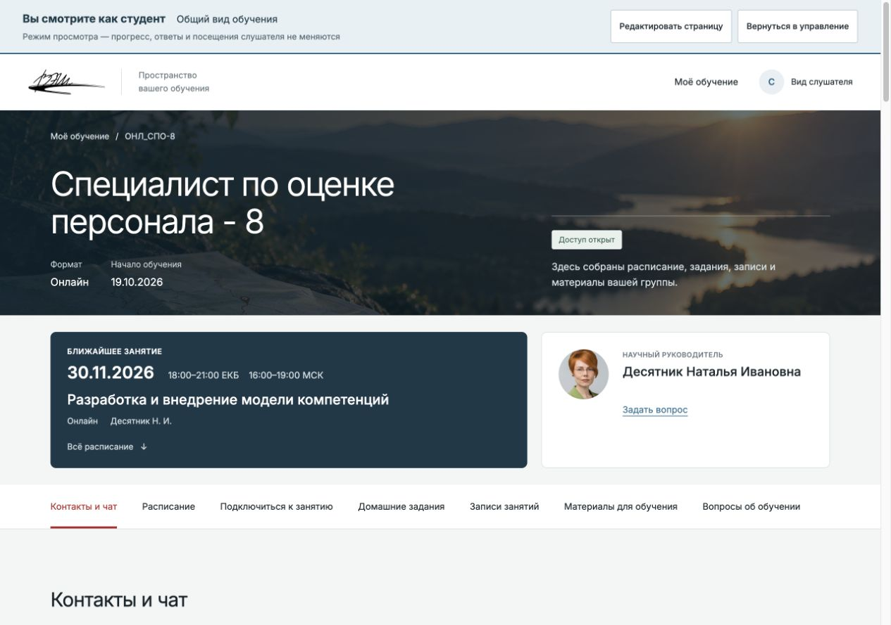
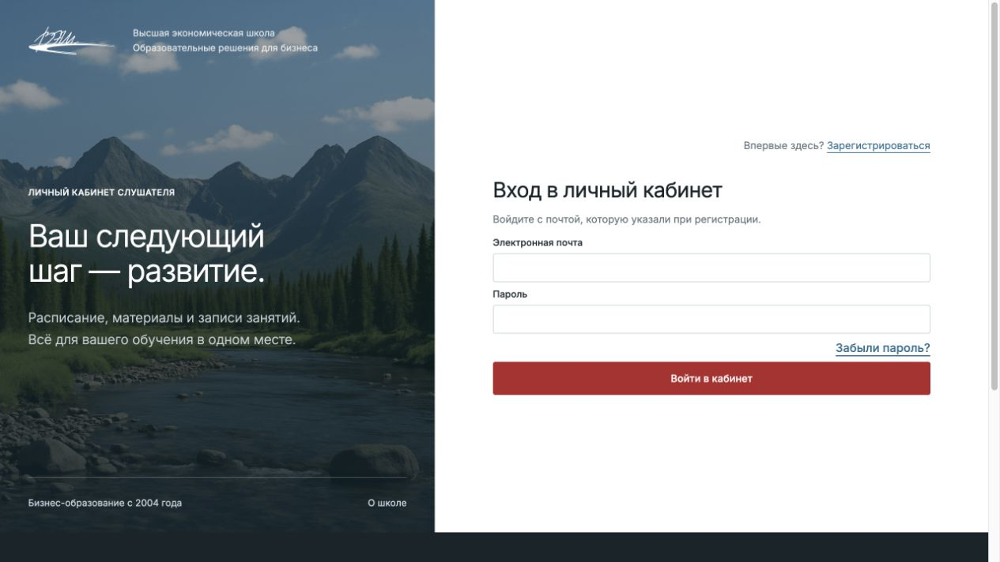

Для отдела продаж и администраторов ВЭШ
Личный кабинет
глазами
слушателя
Один аккаунт. Всё своё обучение.
Понятный следующий шаг.

Реальный экран student.veshk.ru 26.11.2026
01 / Начало пути
Сначала — своё обучение
Слушатель входит в аккаунт и попадает в «Моё обучение». Отсюда он открывает свою группу или самостоятельный курс.
В «Моём обучении» слушатель находит свои программы, бесплатные курсы и курсы в записи. Нужная карточка ведёт к странице группы или к самостоятельному курсу. У каждого обучения — свой доступ и срок.

Нажимайте на подписи и пронумерованные метки — они раскрывают пояснения. «Рассмотреть экран» открывает фрагмент страницы крупно.
02 / Обучение в группе
Всё, что нужно к занятию
Посмотрим настоящую страницу «Специалист по оценке персонала — 8»: от ближайшего занятия до записей и материалов.
Администратор собирает страницу из блоков. Состав разделов и наполнение зависят от группы; общие блоки можно использовать в нескольких группах.
03 / Самостоятельное обучение
Урок за уроком. В своём темпе.
На примере курса «Динамические дашборды в Excel для руководителя» посмотрим, как слушатель ориентируется в программе и открывает урок.

Личный прогресс: отметки уроков относятся к конкретному слушателю и курсу. Они сами по себе не подтверждают полный просмотр видео или усвоение материала.
Обратная связь: после курса слушатель может оценить обучение и описать, что помогло, а что хотелось бы улучшить. Ответы дают команде материал для развития курса.
04 / За интерфейсом
Один человек.
Разные основания доступа.
Аккаунт объединяет обучение. Доступ, срок и прогресс относятся к конкретной программе или курсу.
Главное правило
Регистрация ≠ доступ
ко всем материалам
Здесь показана логика доступа. Подключение форм, оплат и писем проверяется отдельно для каждого запуска; схема не означает, что все интеграции уже включены.
05 / По другую сторону экрана
Команда видит контекст
Какая группа у человека, открыт ли доступ, когда он закончится и что нужно сделать дальше.
Разберём обычную ситуацию
«Я вошёл, но не вижу обучение»
Выберите, что проверить.
06 / Следующий шаг
От доступа — к пониманию пути
Единый кабинет создаёт основу для аналитики: кто начал обучение, кто продолжил и кто вернулся за следующим курсом.
Данные о пути слушателя могут стать основой будущих отчётов по платным и бесплатным курсам.
Для продаж
Что приводит к следующему обучению?
Сопоставить бесплатный курс и последующую подтверждённую покупку. Считать людей по единому профилю и фиксированному периоду.
Так можно будет оценивать продолжение пути после бесплатного курса и повторное обучение.
Для администраторов
Где слушателю нужна помощь?
Найти выданные, но не использованные доступы, группы с низкой активностью и повторяющиеся замечания в обратной связи.
Для такого отчёта нужны согласованные события, даты, правила расчёта и права доступа.
Что есть в ЛК и что нужно добавить для этих отчётов
Основа уже есть
Аккаунты и зачисления, сроки доступа, отметки уроков самостоятельных курсов, анкеты обратной связи. Сотрудники могут разбирать ответы и выгружать их в Excel.
Следующий этап
Единые отчёты по платным и бесплатным курсам, история нужных событий, сопоставление с проверенными оплатами и источниками заявок. UTM, выручка, конверсия и длительность просмотра не предполагаются автоматически готовыми.
Для честного сравнения нужны одинаковые окна наблюдения и понятные определения. Клик по ссылке на видео и отметка урока не равны полному просмотру. Прогресс самостоятельного курса нельзя автоматически переносить на посещаемость занятий в группе.
07 / Берём в работу
Слушателю — ясность.
Команде — общая картина.
Один аккаунт
Новое обучение добавляется к прежнему профилю. Доступы и сроки остаются отдельными.
Понятная точка входа
«Моё обучение» ведёт к группе или курсу. Внутри — всё необходимое для следующего шага.
Основа для аналитики
Появляется возможность связать обучение и дальнейший путь клиента. Отчёты — отдельный этап развития.
Об экранах и режиме показа
Презентация для отдела продаж и административного отдела ВЭШ. В примерах — вход и фрагменты реальных страниц обучения на student.veshk.ru по состоянию на 26.11.2026. Показаны только области, относящиеся к слушателю; изображения не перерисованы.
Метки и переключатели раскрывают пояснения. «Рассмотреть экран» увеличивает тот же фрагмент. Кнопки внутри снимка не выполняют действия в ЛК.
Возможности аналитики описаны как будущий этап развития. Презентация не подключена к данным слушателей и не изменяет обучение.
Читайте как сайт или включите «Режим показа». Стрелки внизу переключают главы. В режиме показа работают ← и →; Escape закрывает увеличение или завершает показ.
История: 26.11.2026 — реальные снимки и пояснения; затем оставлены только примеры со стороны слушателя.